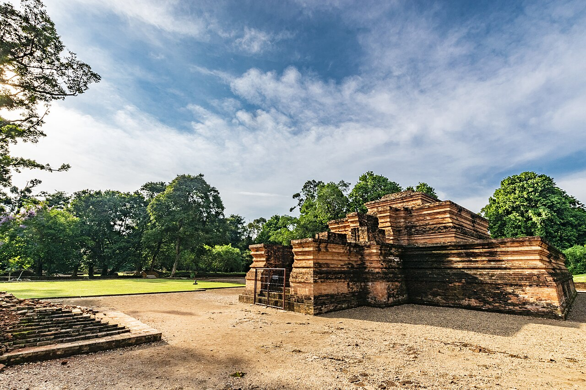
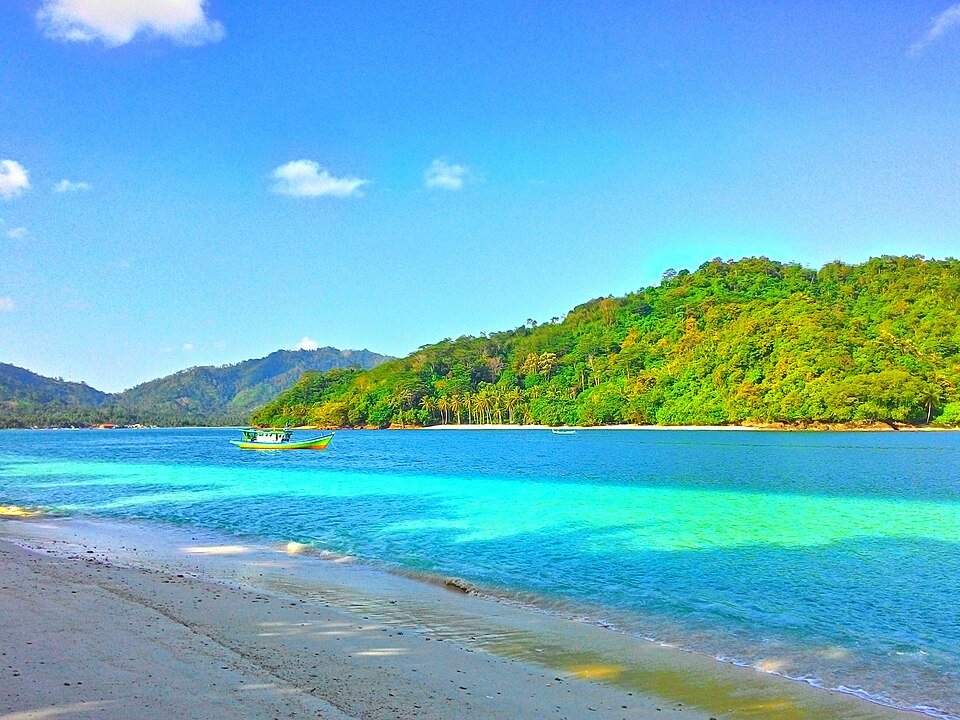
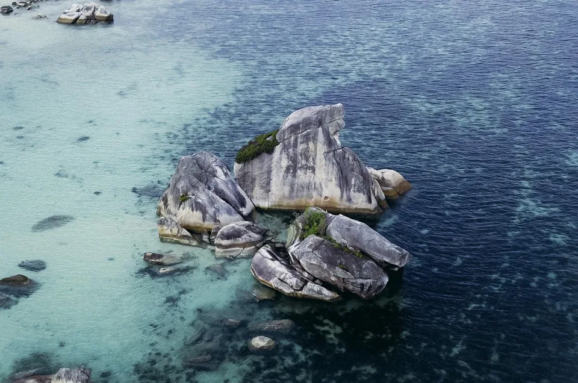

Sumatera
Pulau Kaya Budaya, Alam Megah & Warisan Tak Ternilai
10 Provinsi
Alam Eksotis
Budaya Beragam
Scroll Ke Bawah
Jelajahi Provinsi
Mari Kenali Lebih Dalam Wilayah Sumatera
Temukan 10 provinsi menakjubkan yang membentuk keindahan Pulau Sumatera






